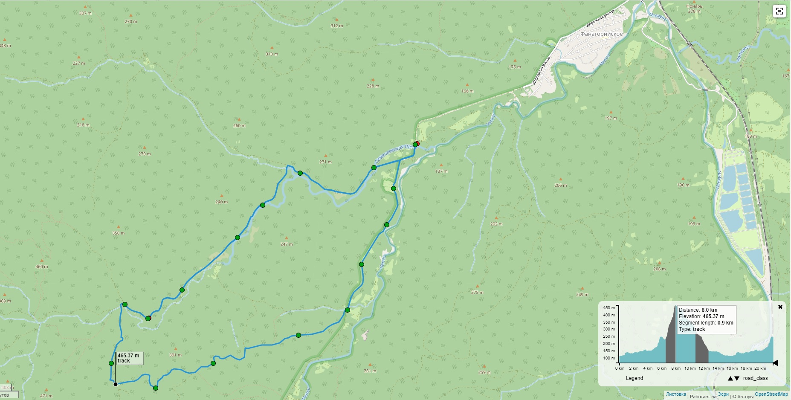

Аюкские водопады 2022
Кольцевой маршрут
Расстояние по фитнесбраслету - 30 км.
Время в пути - 7 часов 30 минут
"Лесной дух" наполняет реку водой
Природа благодарна "лесному духу"
"Лесной дух" позирует в образе туриста
Маршрут можно посмотреть здесь:
